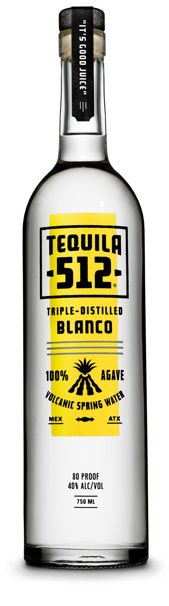
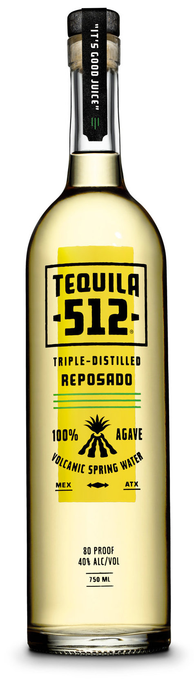
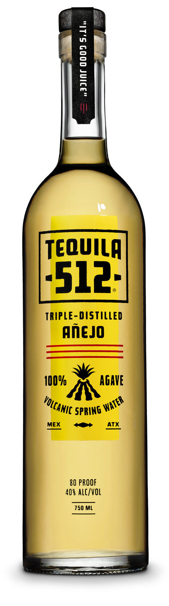

dehaze
clear

-
OUR TEQUILAS
THE STORY
RECIPES
WHAT'S NEW

FOR YEARS BARTENDERS AND AFICIONADOS HAVE USED THIS PHRASE TO DESCRIBE GREAT TEQUILA. AND IT'S EXACTLY WHAT WE HOPE YOU SAY WHEN YOU TRY TEQUILA 512.


Our first and most popular offering. Spicy and soulful, this rich 100% agave tequila surprises with a super smooth finish. It's bold and welcoming. Just like the 512.
100% AGAVE
TRIPLE-DISTILLED
WORLD SPIRITS DOUBLE GOLD/BEST IN SHOW
WHERE TO BUY



Our second offering. We take our deliciously smooth Blanco tequila and rest it in charred oak bourbon casks for 6 months. The result is a full-bodied Reposado that charms with its mellow richness.
100% AGAVE
TRIPLE-DISTILLED
Rested 6 months
WHERE TO BUY


Our newest addition. The first batch of Tequila 512 Añejo has been rested for over a year in bourbon casks. A beautifully sweet and organic approach with a peppery body and slight mango finish. It is finally ready and coming to a store near you!
100% AGAVE
TRIPLE-DISTILLED
Rested 12+ Months
WHERE TO BUY
FIND A BOTTLE